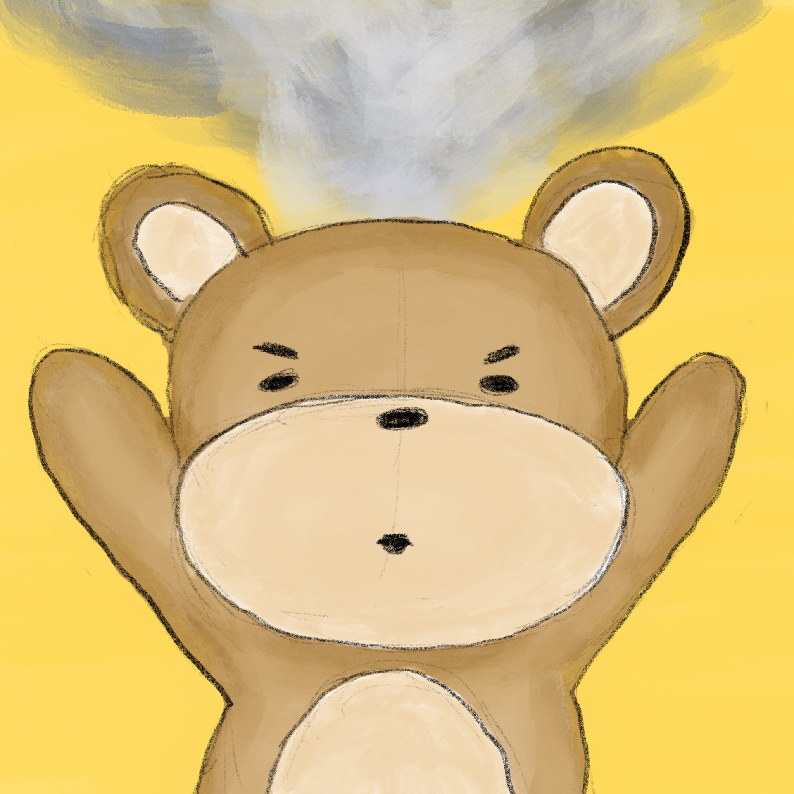
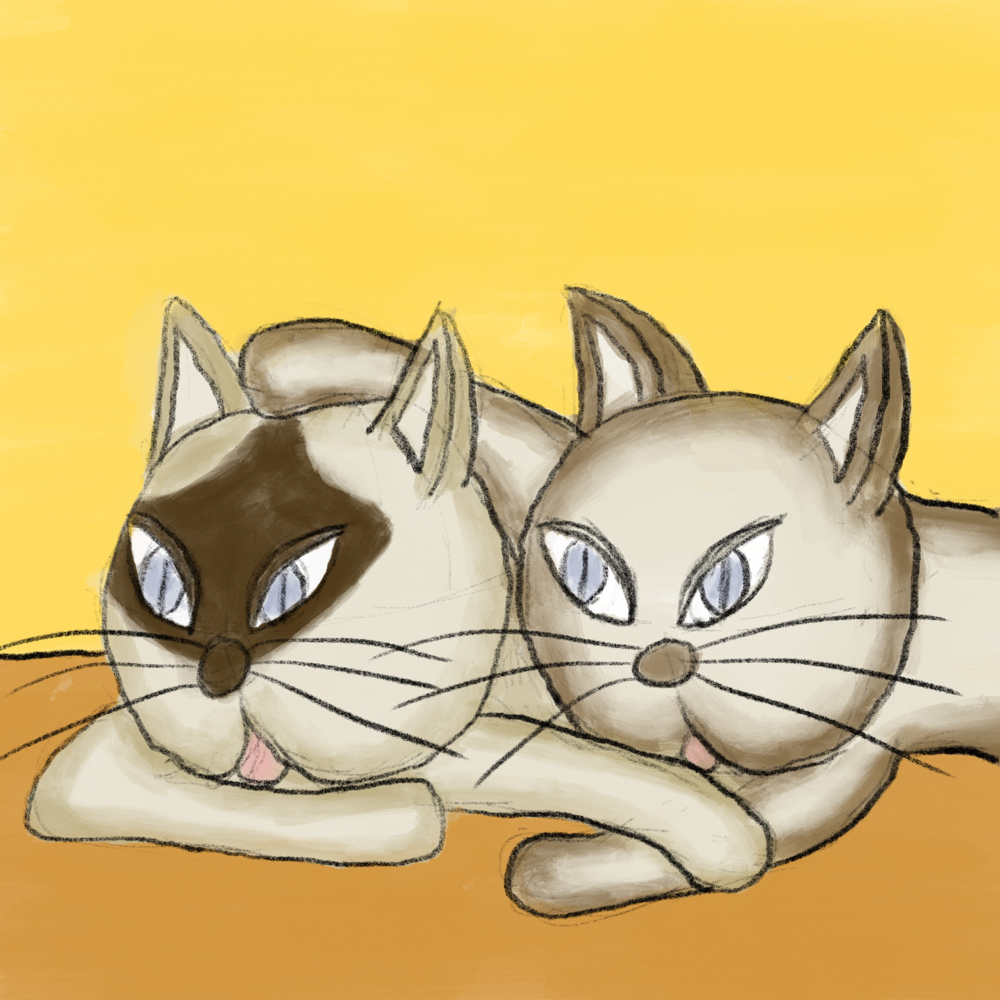
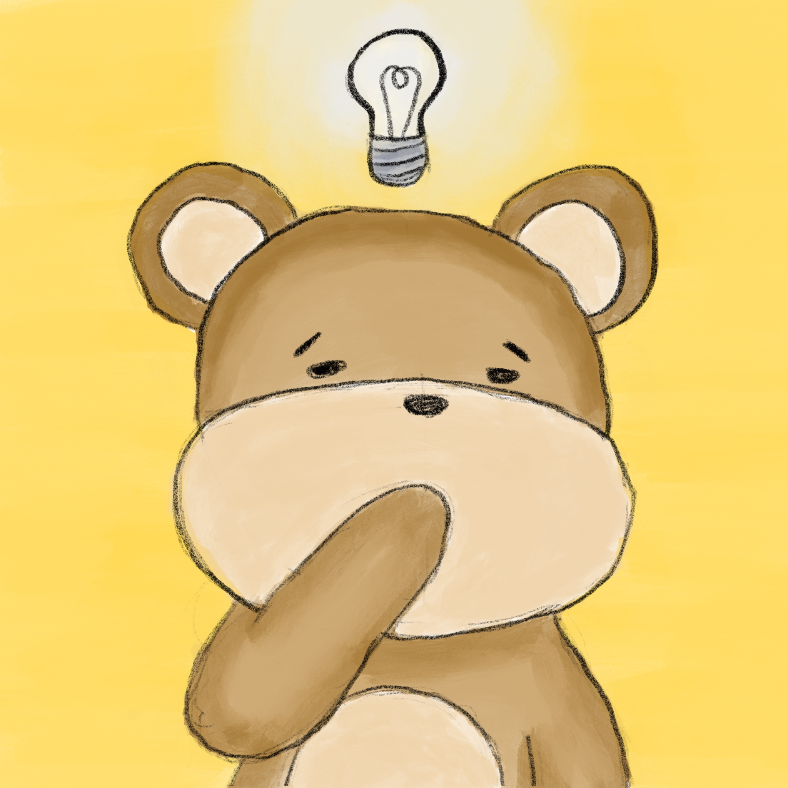

"Then I don't know who I am!”, the bear cried, throwing his arms up in exasperation, steam rising from his forehead. “I mean sure, I know feeling sad doesn't define me, because I'm not always sad," he continued, calming down a little. "I suppose, then, I am the sum total of all of my thoughts and feelings, from my whole life? Is that what you're getting at?" he asked. #40

"Dearest bear, you’re on the right track,” Cooksie replied, "But that's not quite it. Even if you had some different thoughts or feelings yesterday," Peanut interrupted, "or the day before," Cooksie continued, "you would still be you. You are not your feelings, not one of them, not all of them.” “Yes bear," Mr. Peanut said, with some gravity, "you are the one that watches." #41

“The one that watches,” the bear said thoughtfully. “I guess that’s true - whatever happens, whatever I feel, I’m always there, watching. Then right now I’m watching myself feel sad. But what can I do to change those feelings?” #42